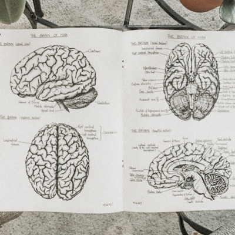

Ideal Jobs
| NAME | IDEAL JOB | DEMAND | GENERAL SKILLS | IT SKILLS |
|---|---|---|---|---|
| Yu-Cheng | IT Admin | Medium High | Communication Problem solving Organisation Time Management Leadership |
Fluent in many coding languages Familiarised with Data Management System Admin Softwares Building Networks/Basic Cybersecurities |
| Nayli | Machine Learning Researcher | High | Communication Mathematics Time Management Teamwork |
Data analysis Statistical Analysis Machine Learning Understanding algorithms |
| Melanie | Sexual Psychologist | Medium | Respect Emotional Management Passion |
None |
| Shuyun Li | Product Manager | Medium | Communication Patience Team Management |
Knowledge of IT Markets |
| Kelvin | Penetration Tester | Medium (On the rise) |
Creative thinking Problem Solving Time Management |
Fluency in Coding Linux Proficiency Deep understanding of Networks |
Industry Analysis
Nayli
The required general skill set is something that I need to make an effort to work towards every day. Social skills such as communication and teamwork are skills that have to be sharpened in the long run and it’s not something that I can study or pull all-nighters for. These skills are highly sought after and would be beneficial to me - not just in the workplace but in building meaningful relationships with colleagues and business associates. My comprehension of mathematics and time-management skills are weak, and it's something that I have always wanted to improve on. A strong foundation in mathematics will help me in my required IT skill set, especially in data and statistical analysis.
The required information technology skills are skills that take years of experience in the information technology industry to master, but I’m passionate about my subjects of interest and I’m determined to work hard to achieve my goals. Many start-ups are looking for machine-learning engineers in order to develop their Artificial Intelligence technologies, since the AI industry is currently blowing up. These jobs require a strong understanding of algorithms and data analysis, and I hope that I can stay motivated enough to be able to contribute to the growing developments in Artificial Intelligence, especially in utilising AI to make healthcare more accessible and effective.

Melanie
I am a strong advocate for sexual and mental health. I also approach it with an open mind and am respectful of people's issues, desires and lifestyle preferences and prioritise safety, wellbeing and collaboration. I strongly believe in creating a safe, open and non-judgemental space where both the patient and practitioner work together to develop a tailored treatment plan to figure out how we can both help each other.
One of the hardest parts of being a practicing psychologist is emotion management. This will require time and experience to ‘master’ but even then it is impossible to completely separate biases, our emotions, our personal life from our patients. Our patients go through painful and traumatising experiences, it’s hard to separate it from our personal lives and to not think about it after work. Many psychologists are also guilt ridden when a patient harms themselves or others while or after therapy. Since there are no statistics for my field of study in Burning Glass, I am unable to make references to that.
Shuyun
A manager needs to lead teams to design candidate journeys to promote high-level interactions with different SEEK target audiences and work closely with key stakeholders (including delivery, AI, marketing, GTM, and strategy), to deliver products with long-term external communication and SEEK service strategy. Product managers need to be able to identify applicants suitable for a project, accurately communicate instructions to their team members, have the ability to analyse competing products and be able to lead the team to design a product. This attracted me because I really want to try leading a team.
Kelvin
A pen tester, fun to say, hard to execute. Short for penetrations tester, these professionals poke and prod at the safeties and privacy of any programs, firms, or websites. Often referred to as ethical hackers, they perform regular security procedures to explore any weak points in a company’s network, hoping to mitigate any real damage before actual cyber-attacks take place.
Pen testers have an important job, in this growing world of online technologies, closing possible attack routes is the best way to mitigate any hacking threats. However, many companies leave this sort of work to their own IT departments and will only rely on pen testers after a hack has taken place.
IT jobs in general are on the rise, according to Burning Glass, cybersecurity job postings have grown 74% from 2007 – 2013. A growth rate of over double when compared to other IT jobs (33%). With this being projected to rise further as the years go on.

Yu-Cheng
Many of this position’s required IT-specific skills are created through years of learning and working experience. Some of these skills like programming languages may be usual for many people looking for a job, but all these skills combine into a highly demanded skill set where most people don’t include all.
The required general skills are built upon working experience with people. These managing and people mastery skills are not common since not everyone is born a leader. These skills are trained for years which is not easy to achieve, causing these skills to become highly demanded skills. Some most in-demand IT skills in 2021 that are not required to be an IT administrator include AI, VR, and blockchain.
As for some most needed general skills in 2021, including UX design, Sales, and translation, are not mandatory when applying to be an IT admin. After looking at these articles and statistics, I’m more sure about my ideal job since these are crucial to the market in the future and will gain me a big fortune compared to most other jobs. Although being an IT administrator takes years of training and hard-work, I still want to strive for it and grind for that bright future.